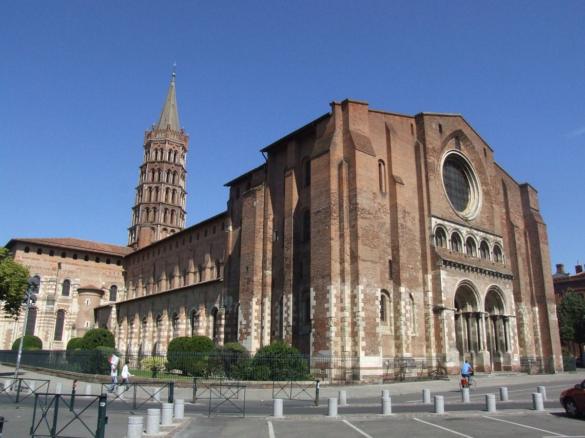

欧洲中世纪的建筑超简史
文章目录
在写乔托对欧洲中世纪绘画的过程中，查阅了一番欧洲中世纪的建筑发展掠影，短文之。
中世纪在建筑上的改进是显而易见的，从技术到材料，在每个世纪都逐渐进步。
插播另一文快捷入口：欧洲中世纪的绘画超简史
1、11世纪晚期到12世纪
从11世纪晚期到12世纪，最初的**罗马式（Romanesque）**用厚石墙和拱顶来建造教堂，拱形拱顶和交叉拱顶最常见。
受限于对墙体的承重，教堂一般未设计明亮的窗体，内部是阴凉静暗，与外面的灿烂明亮形成对比，给教众和朝圣者营造一种庄严肃穆的氛围。
罗马式教堂中非常宏大的典范之一就是法国图卢兹的圣瑟尔南教堂Saint Sernin（约1080-1120年），外观框架是十字形布局，中轴线交叉口上有一处高楼，象征基督在十字架上的身体，从空中俯视（图1）能分别探到东西方向的门楣。 教堂的西面（图2）[1]是正门，用两个拱门相依，采用的是成熟的筒形拱顶结构；东面（图3）[2]是内室，结构为五个小礼拜堂环在一起的回廊。
 图1. 从上空俯视教堂
图1. 从上空俯视教堂
 图2. Saint Sernin教堂西面
 图3. Saint Sernin教堂东面
图3. Saint Sernin教堂东面
那个时代的着浓重的天国思想：混沌的心灵通过物质的东西升向真理，当它看见真理之光，就从沉沦中复活。
这个时期登峰造极的作品必须是塞纳河中西堤岛上的巴黎圣母院Notre-Dame de Paris（约1160-1260年）。 西侧的正立面（图4）[3]可以用巍峨来形容，临河的南面（图5）[4]又是另一番风采。
 图4. 巴黎圣母院西侧正立面
图4. 巴黎圣母院西侧正立面
 图5. 巴黎圣母院南面
图5. 巴黎圣母院南面
在13世纪除了教堂建筑的稳定发展，雕塑在装饰教堂中也重视刻画人物或自然的细微细节，更重要的是圣经手抄本或其他形式的手抄本开始普及，为绘画艺术的发展打开了契机。
同样是纪念圣母（Notre-Dame英译为Our lady）的兰斯大教堂Notre-Dame de Reims（约1211-1275年），她的正立面（图6）[5]较巴黎的Notre-Dame更加的华丽，窗花格更加精致；侧边的北面（图7）[6]可以看出中殿屋顶更高。
 图6. 兰斯大教堂西面外墙
图6. 兰斯大教堂西面外墙
 图7. 兰斯大教堂的北面
图7. 兰斯大教堂的北面
这时有教皇或少数的贵族定制插图手抄本，早期插图多以“灰彩法”作画，后期已经有蓝、红、黄、白几种最核心的颜料已经进入画家的工作程序中，为五颜六色的花草、生动的人物创作提供了技术支撑。
这个阶段要点名的是后起之秀英国的后期哥特式风格的先锋格洛斯特大教堂Gloucester Cathedral（约1337-1355年），也因独特性吸引到《哈利·波特》取景。从正面（图8）[7]和侧面（图9）看明显比上面法国的两个圣母教堂要朴素，但是她的华美都在内部，内殿（图10）[8]上的网状拱顶甚至都镶着金饰。
 图8. 格洛斯特大教堂的西侧
图8. 格洛斯特大教堂的西侧
 图9. 格洛斯特大教堂的北面
图9. 格洛斯特大教堂的北面
 图10. 格洛斯特大教堂内殿
图10. 格洛斯特大教堂内殿
参考： [1] 圣图尔南教堂西面 [2] 圣图尔南教堂东面 [3] 巴黎圣母院西面 [4] 巴黎圣母院南面 [5] 兰斯大教堂西面 [6] 兰斯大教堂北面 [7] 格洛斯特大教堂西面 [8] 格洛斯特大教堂内殿
{kind=link}
{kind=link}
{kind=link}
{kind=link}
{kind=link}
{kind=link}
{kind=link}